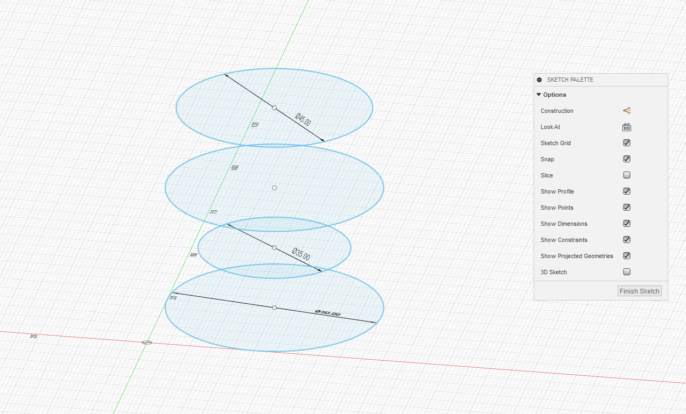
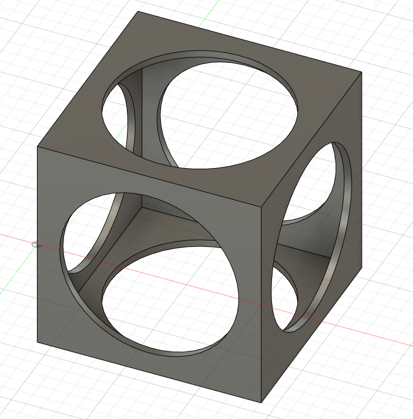

Introduction to Computer Aided Design
Computer Aided Design basically allows the user to create or change things the user sees fit. Things like editting an image can be done using softwares like Photoshop or GIMP.
Or to create things which can than be 3D printed, using softwares like Fusion 360.
Fusion 360 has a simple layout for creators that are new to the software. The user is free to create whatever he or she wants to any scale they want it to be. Fusion 360 allows the
user to scale or set specific amounts they want the item to be.
In this case I created a keychain with my name on it. First using a rectangle shape and drawing our the wanted dimensions on the correct plane. Followed by adding text and
extruding it outwards. Finally creating the keyhole with the cynlinder option and cutting a hole through it. Thus the end result below.
After adding another circle around the hole and a rounded rectangle inside the entire frame. Extruding and making a depth for the for the inner space results in a clean and
sophisticated looking keychain.
15 May 2020
Practicing on more objects and playing around with the other options to create a "star" and an egg cup. For the star I created my own sketch using the Sketch tool.
Creating 2 hexagons within one another and connecting the edges of both hexagons together. Followed by splitting the connected lines with the 'fillet' tool to create curved lines and drawing lines connecting
them together. After that extruding the wanted sections by 10mm.
I created a 6 pointed star sketch to cut in the middle of the first model. Making it look like it has a more defined design rather than a solid piece.
To top it off, I created 6 circles using sketch and the circular pattern option. By selecting the shape and a pivot point, the circular pattern eases the duplicating process and cleanly lines selected objects. It also allows the user to duplicate the pattern as many times as they want. After using the 'circular pattern', I lined it up with the model and cut straight through it. Thus giving the finished product as shown. Also using 'fillet' to round out the edges.
The eggcup design is done by layering multiple circle sketches of different proportions on top one another with a significant spacing apart. After aligning said sketches, the 'loft' tool is using to combine the circles making it a solid object.
After doing the loft, I used the 'Shell' tool to hollow out the cup portion. By selecting a face and clicking on 'Shell', the user is able to specify how thick they want the cup to be. I gave it a '1.5mm' thickness so that it wouldn't seem to thick or to thin.
Thus concludes today's learning.
Back to Top
18 May 2020
Exploring more functions of the Fusion 360 software shows that many things are achievable with it. Today's work goes through the different functions such as extruding symmetrically and even shelling objects which are whole rather than a single face. First object created today in a hollow cube with a sphere in the middle.
Start off with sketching a square than using the extrude tool to extrude it symmetrically.
Than highlighting the entire cube and using the shell tool to make it hollow. In this case i set the thickness of the shell to be at 2.5mm.
To check whether the object has been hollowed our or not, I used the 'Section Analysis' Tool under the inspect section.
After this, I sliced circles straight through all sides of the cube to give it its own defined design. Followed by adding a sphere in the middle.
With the object completed I could leave it as it is but where's the fun in that? So I added textures to each individual object. On the left side of the screen, there is an option for 'bodies' which contains each individual object. So right-clicking one of them and picking the 'Physical Material' option allows me to assign textures to each object specifically. Also cleaning up the design, making it look more friendly by using the 'fillet' option to round out the edges.
Back to Top
Now for sketches, it doesn't necessarily have to be your own design but you can also make clipart into full 3D models. First by taking a clipart and putting it in Fusion 360, followed by sketching out half of it. Followed by fine tuning the edges to what I see fit.
After tuning the edges to what I like, making sure that none of the lines spill over the axis, I use the 'Revolve' tool to make a full shape of the object.
Thus concludes today's learnings
Back to Top